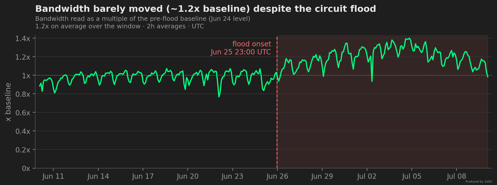
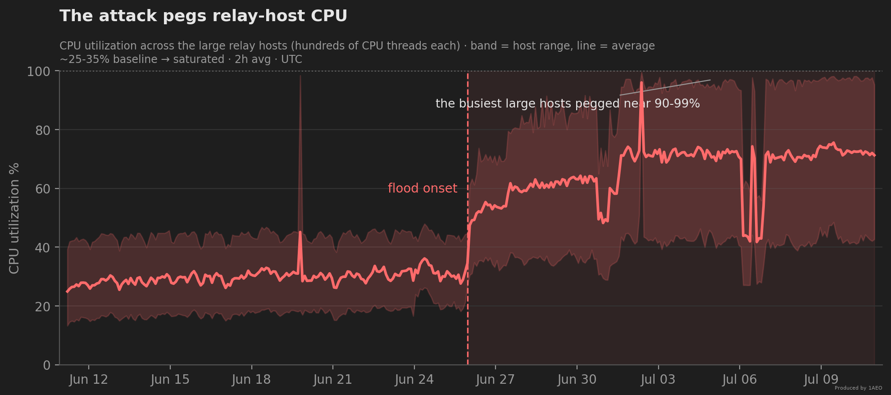
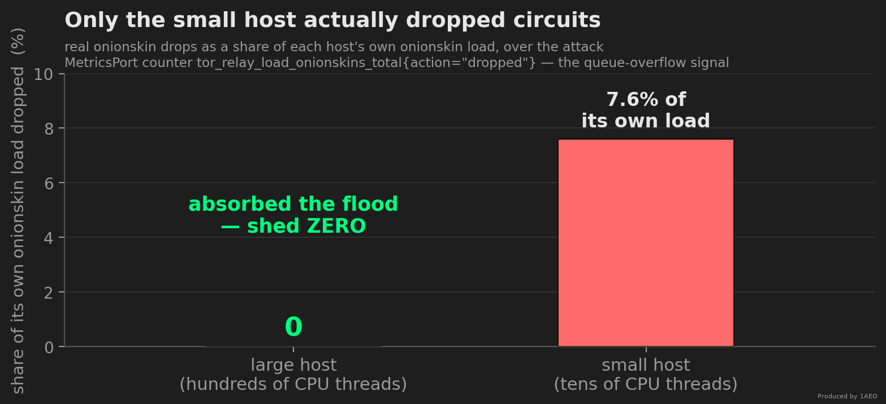
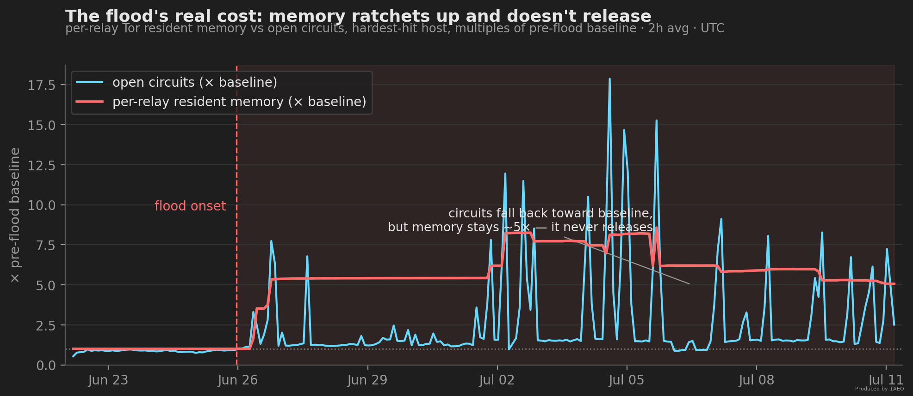
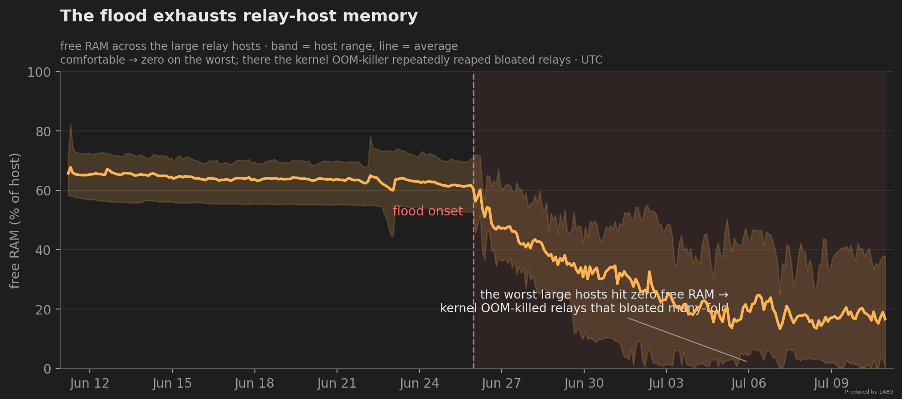
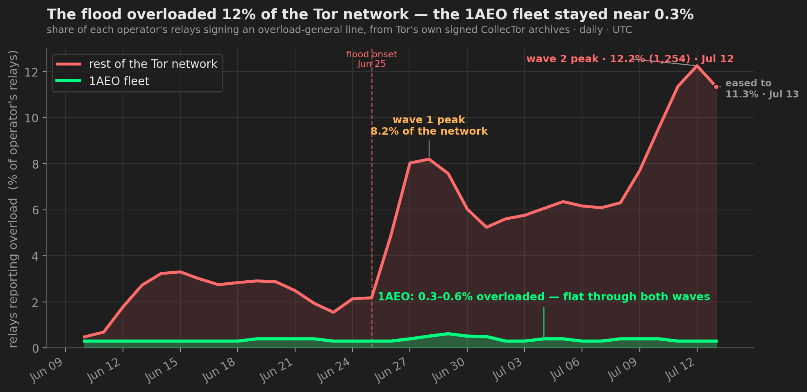
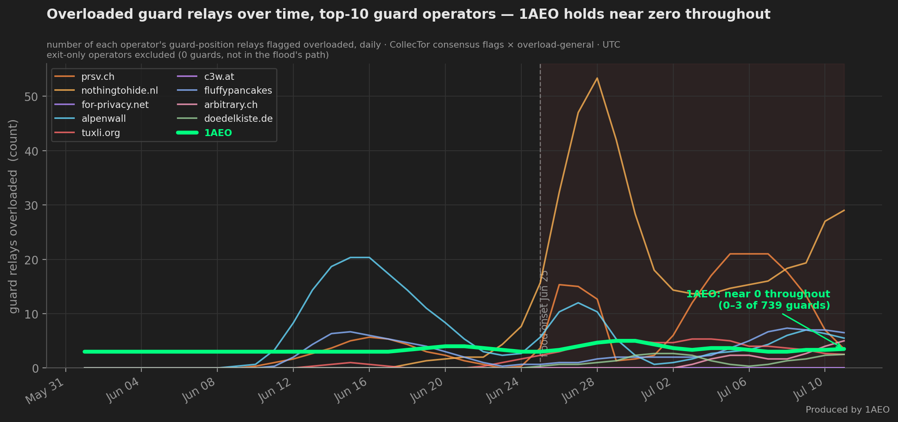

What a Circuit-Building DoS Actually Costs: How 1AEO's Guard Fleet Held
Part 3 of a five-part series on the June–July 2026 circuit-building DoS. 1. The Tor Network Is Under a Circuit-Building DoS Wave — the network-wide view from Tor's public data. 2. Anatomy of the Attack — the three waves and how each one works. 3. What It Actually Costs (you are here) — the CPU and memory bill, and how 1AEO ranked. 4. The Flood Below Tor — the connection flood Tor's own counters cannot see. 5. Defending Against Circuit-Building DoS — better metrics and the protocol fixes we're asking for.
Since June 25, 2026, 23:00 UTC, 1AEO's guard-relay family has been absorbing a sustained circuit-building DoS wave — open circuits at ~20x baseline peak, overwhelmingly modern ntor_v3 handshakes, arriving in three waves offset in time (the attack anatomy is in the companion post). Tor's built-in, consensus-driven defenses engaged and did real work — but they cap the rate, not the volume: everything under the per-source limit still has to be absorbed. This post is about what absorbing it cost. The hard part isn't the circuits themselves — it's that soaking them up saturates relay-host CPU and drives memory to exhaustion, all while the relays keep relaying traffic without interruption. Two-plus weeks in, the flood hitting 1AEO's relays has eased from its peak (open circuits down to a few times baseline) but the busiest hosts are still pegged near 90–99% CPU, and the kernel OOM-killer has terminated relay processes that ballooned to many times their baseline size. The large hosts absorbed the flood without dropping a single circuit — the only machine that actually buckled was the smallest host. Below: the full cost to the operator, and — from Tor's own public records — how 1AEO's fleet ranked against the rest of the network. All data below is from 1AEO's own relays — about 10% of the Tor network — so it shows the flood easing on this fleet from its peak; network-wide, the overload it caused is still elevated (several times its normal level) as we publish, and we can only see our own slice.
Summary #
- CPU saturation. Absorbing the flood's ntor handshakes drove our hardest-hit relay hosts from a ~20–45% baseline to 96–99% CPU (others 74–89%), load average well above core count — and the busiest are still pegged. This is raw public-key crypto cost; no allocator or config tuning we know of touches it.
- Memory exhaustion → OOM. Resident memory ballooned — roughly 2.5x on the fleet average, while the worst single relay briefly reached ~94 GiB, about 86x its ~1 GiB baseline, and at least ten relays exceeded 60 GiB (per-relay memory telemetry covered only part of the fleet in-flood, so these are floors). Whether that memory ever came back without a restart depended on the allocator (below). Free RAM on the hardest-hit hosts fell to zero; there the kernel OOM-killer repeatedly terminated relay processes that had bloated to many times their baseline size. On hosts where Tor could see the pressure in its own cell queues, it shed that queue memory to stay alive instead.
- The large hosts absorbed it — only the smallest dropped. Tor's real drop counter reads zero on every relay across our large, many-core hosts: with enough cores they cleared the ntor queue and never overflowed. The one host that dropped circuits was our smallest, which has far fewer cores — it shed about 7.6% of its own onionskin load (the circuit-creation handshakes a relay must answer), the only real drops anywhere in the fleet (a fraction of a percent of everything the fleet processed). The distinction matters, because the Heartbeat's
assigned/requestedgap looks like a drop count but isn't — it measures circuit abandonment, not queue overflow. - Every location and provider we run (EU + NA) was hit simultaneously with the same onset; the load arrives over existing OR connections (established TCP counts stayed flat) and includes an onion-service introduction component. This was a network-wide wave — it drove ~10–12% of all Tor relays, across ~290 networks, into overload — not something aimed at us; if anything our fleet was among the least affected large operators (see below).
- The good news: throughout all of this the relays kept doing their job — accepting connections and relaying traffic without interruption. Measured against the whole network from Tor's own public data, we came through it better than almost any large operator. This is a guard-targeting flood and we run only guards, so the fair comparison is guard-to-guard: just 0.4% of our guard relays are overloaded — among the very lowest of any major operator, and at by far the largest guard count (the guard-to-guard comparison below). While the flood drove ~10–12% of all Tor relays into overload (and briefly knocked ~3–4% of the network offline), our fleet held at 0.3% overloaded and ~100% running. The attack drove our hardware to its limits, but the traffic passing through the relays kept flowing — the cost fell on our infrastructure, not on the connections it carries.
Full event window (Jun 25 – Jul 10), every multiple measured against the same pre-flood baseline — the settled level on Jun 24, the day just before onset (Jun 23 dipped to a brief lull, so Jun 24 is the representative pre-flood day). "Avg" is the window mean; "Peak" is the worst sample over the 24 days. All the summary charts below use this same baseline, so the chart curves and these numbers line up:
| Metric | Avg change | Avg multiple | Peak change | Peak multiple |
|---|---|---|---|---|
Open circuitstor_relay_circuits_total{state="opened"} | +780% | 8.8x (the "~9x average") | +1940% | ~20x (the "20x peak") |
Onionskins processedtor_relay_load_onionskins_total{action="processed"} | +530% | 6.3x | +1050% | 11.5x |
Stream creationtor_relay_streams_total | +150% | 2.5x | +500% | 6.0x |
Bandwidthtor_relay_traffic_bytes{direction="read"} | +24% | 1.2x | +40% | 1.4x |

The three waves that make up this flood — an onion-service INTRODUCE2 burst, the main circuit-creation flood, and a malformed-circuit tail — and the way Tor's built-in defenses met each one are traced in the companion anatomy post. Here we pick up where those defenses leave off: with what the fleet had to absorb.
The Real Cost, Part 1: CPU Saturation #
Every circuit the attacker opens forces an ntor handshake — a Curve25519 public-key operation run on a CPU worker thread. Multiply that by a 20x circuit flood and the cost lands squarely on CPU. Our large relay hosts climbed from a ~20–45% baseline into heavy saturation within a day of onset — the hardest-hit reached 96–99% CPU (the rest 74–89%), load averages above their core counts (oversubscribed) — and the busiest are still pegged two weeks on.

This is the part with no easy fix. Memory growth (below) has an operator lever, and only an under-provisioned box drops circuits at all — but the raw CPU load itself has none. ntor is intentionally cheap for a source to request and expensive for a relay to answer, so a circuit flood converts almost directly into sustained CPU load — more cores absorb more of it (which is exactly why our big hosts kept up and dropped nothing), but nothing makes it cheap. It is the clearest signal in this whole event that the defense has to live in the protocol, not on the operator's server.
The Real Cost, Part 2: The Large Hosts Absorbed It — the Smallest Didn't #
Here is the surprising part. Our large hosts — hundreds of cores each — absorbed the entire ntor flood without dropping a single circuit. Tor's real drop counter — tor_relay_load_onionskins_total{action="dropped"}, the queue-overflow signal — reads exactly zero on every relay on those hosts, for the whole attack. The one machine that shed circuits was our smallest, with only a dozen or so cores: it dropped about 7.6% of its own onionskin load. Every real drop in the entire fleet came from that single host.

Why did only the smallest host drop? A relay sheds an onionskin only when its queue can't clear in time: Tor estimates how long the queued handshakes will take (queue depth ÷ worker throughput) and, once that exceeds a latency budget — MaxOnionQueueDelay, ~1.75s by default — it drops the overflow and logs “Your computer is too slow to handle this many circuit creation requests.” That warning fired many times on the smallest host and exactly zero times on the large ones over the wave. It is a pure CPU-throughput wall: a host with hundreds of cores clears its onion queue fast enough never to trip the check; one with only a dozen can't.
In Tor 0.4.9.6 (our fleet spans 0.4.9.6–0.4.9.11, all directory-recommended) the gate that dropped on the smallest host is have_room_for_onionskin() in onion_queue.c: it takes estimated_usec_for_onionskins() over the queued ol_entries, divides by num_cpus worker threads, and returns "no room" — a drop — once that estimate exceeds MaxOnionQueueDelay. No memory term appears anywhere in the check.
There is one more twist. Our smallest host was also the one the connection-level flood largely skipped — its connection-abuse rejections ran at a small fraction of any large host's — and it still couldn't keep up. Less attack, fewer cores, more damage: below a large-enough core count you simply cannot parallelize an ntor flood across enough worker threads, however few relays you run. The large hosts had hundreds of cores; that is the whole difference.
The Real Cost, Part 3: Memory Exhaustion #
Sustained circuit build-and-teardown churn fragments Tor's heap. Fleet-wide, resident memory climbed about 2.5x, while the worst individual relays bloated far harder — into the tens of GiB from roughly 1 GiB baselines, the worst observed briefly near ~94 GiB (~86x); per-relay memory telemetry covered only part of the fleet during the flood, so these are floors. Whether it came back down split cleanly by allocator: on glibc, memory never released when circuits fell — the ratchet held for days until a restart or the kernel intervened — while on mimalloc 2.1, relays repeatedly returned tens of GiB to the OS in-process within minutes to hours. Even relays that released kept an elevated floor around 2x baseline until our July 11 restart — retained, fragmented heap rather than live circuit state.


The outcome was two flavors of out-of-memory, and which one a host hit depended on its allocator and config. Where the bloat was fragmentation outside Tor's cell queues, Tor's own MaxMemInQueues handler never engaged — it saw nothing in its queues to free — so RAM climbed until the kernel OOM-killer terminated relay processes — and only on the hosts where fragmentation drove free RAM to zero. There it fired repeatedly (tracked in node_vmstat_oom_kill), reaping tor relays that had bloated to many times their baseline size, while Ubuntu's systemd-oomd was barely involved. On a host where MaxMemInQueues was set and the pressure showed up in-queue, Tor instead shed a large share of its own cell queues to stay alive. Either way, memory pressure turned into a real operational cost — repeated OOM kills and restarts — but each killed relay came back within seconds, fast enough that the kills stayed process churn rather than service outages: the fleet kept its place in the consensus throughout (we compare our uptime to the rest of the network below).
Does the memory allocator help? On the peak, barely — on the outcome, decisively. Our first read, from peak memory alone, was that it barely helps, and that half still holds: our hosts run a mix of glibc and mimalloc 2.1, and the 95th-percentile relay and the single worst relay bloated as much on mimalloc as on glibc — in fact mimalloc's worst case ran larger. But following weight-matched relay pairs through the whole flood changed the verdict on what happens next. Every glibc relay in our matched pairs held essentially 100% of its balloon — zero bytes released, for days — until the kernel OOM-killer terminated it; every mimalloc twin returned its balloon to the OS in-process, within minutes to hours, and rode the flood out with zero kills. The allocator doesn't cap the balloon, but it decides whether that memory ever comes back without a restart — and with it, whether a host needs swap headroom at all. A real lever on OOM outcomes, not a fix for the flood — the fix is still not being sent circuit floods at this scale. We detail the matched-pair experiment — and what it means for surviving these floods — in a companion post.
Does MaxMemInQueues help? Only in a narrow way, and we can't yet say whether it touches the real problem. Under the flood the guard relays that carry an explicit low cap (we run a mix of 2 GB and 4 GB caps) repeatedly hit it, and Tor shed cell-queue memory to stay under the cap — the hardest-working 2 GB-capped guard shed roughly 8× its cap in cumulative cell-queue memory over the window, while the 4 GB-capped relays worked less hard and some never hit their cap at all (below). So the setting is unquestionably doing something. But MaxMemInQueues only bounds the cell queue. Whether it also curbs the heap fragmentation and circuit structures — which are the larger share of the bloat, and the thing that actually drove hosts into out-of-memory — we don't yet know: we don't have the data. The relays it's set on don't currently export per-relay memory, so its effect on total RSS is unmeasured. It could help, do nothing, or even make fragmentation worse (the shedding is itself allocate/free churn). Confirming that is an experiment we're setting up. For now it is a real lever for the cell queue — but whether it does anything about the memory exhaustion that actually hurt us is unproven.
![Horizontal bar chart of six guard relays on one host, each with a low MaxMemInQueues cap of 2 GB (red) or 4 GB (cyan). Bars show cumulative cell-queue memory Tor shed to stay under the cap, as a multiple of the cap. One 2 GB-capped relay shed about 8.6 times its cap; two others 0.2 to 0.3 times; a 4 GB-capped relay 0.8 times, and two 4 GB-capped relays never hit their cap. The point: the setting actively sheds cell-queue memory, but it bounds only the cell queue, not the heap fragmentation that drove the OOM kills.](images/circuit-building-dos-wave-june-2026-chart-maxmeminqueues.png)
One more corner MaxMemInQueues governs that this section hasn't touched: it also caps each relay's onion-service descriptor cache, at one-fifth of its value — and during the late-June descriptor wave that cache hit its limit and pruned itself over 350,000 times across the fleet, a distinct directory-cache pressure we detail in the anatomy post.
This entire dimension is invisible to a MetricsPort dashboard — watch host-level node_memory_MemAvailable_bytes and node_vmstat_oom_kill, not just Tor's own metrics.
The Shape of the Flood: A Circuit Flood from a Distributed Pool #
At the layer Tor sees, this is a circuit flood, not a connection flood. Open circuits surged many-fold, but the number of established connections barely moved — both kernel-level established-TCP counts and the new-connection rate rose only slightly, nothing like the circuit surge. (A second, connection-layer flood was in fact running below Tor's view the whole time, discarded by the kernel before Tor could count it — The Flood Below Tor tells that story.) That's expected: Tor multiplexes many circuits over each long-lived OR connection, so a circuit torrent doesn't require new connections. The circuits pile up inside a connection pool that stays roughly the size it always was.
The load also looks distributed rather than concentrated — and we can establish that from aggregate counters alone, without ever inspecting a source address. At its peak the fleet held many times its normal number of open circuits (the ~20x crest in the summary table above), and those circuits stayed open. Tor's per-source circuit-creation defense was firing hard throughout — per-relay circuit-rejection rates ran several times their pre-flood level — and that defense rejects any single source creating circuits faster than 2 per second (plus a 60 burst), a consensus default verifiable in any signed consensus. Yet the aggregate still climbed many-fold. For that many circuits to accumulate without being rejected, the creation had to be spread across a very large number of sources, each staying under the per-source limit. Tor's own bad-actor marking agrees: across the whole flood it stayed a trickle — a fraction of a marking per second across the entire fleet — where a concentrated attack from a few sources would have lit it up.
We don't capture, log, or count source addresses, so we report no source-IP figures. What the fleet-aggregate counters do show: a large, distributed source pool that Tor's per-source defenses rejected source-by-source but could never cap in aggregate. That gap — per-source limits that never sum into a per-relay ceiling — is compounded on dense hosts, because DoSConnectionMaxConcurrentCount (default 50) is enforced per tor process, so the effective connection ceiling for a single source scales with the number of relays on a host. We take up what to do about it in the defenses post.
How 1AEO Did: From the Outside, and From the Inside #
There are two ways to judge how a relay operator weathered this, and they draw on completely different data. From the outside, anyone can pull Tor's own public records — Onionoo and the signed CollecTor archives — and rank our fleet against the rest of the network. From the inside, our own host and MetricsPort telemetry shows what that ranking actually cost, which no outside observer can see. Both point the same way — but the gap between them is the point: from the outside we look nearly untouched, and holding that appearance is exactly what saturated our hardware.
From the Outside — What Tor's Public Data Shows #
Everything in this view is reproducible from public records; none of it needs access to our systems.
Every relay signs an overload-general line into Tor's signed CollecTor archives when it crosses an overload threshold. Parsing those archives for the entire network shows the flood in the open: the share of Tor relays reporting overload climbed from a ~2–3% baseline to 8.2% of the network at the first wave's peak on Jun 28, and a second wave climbed through 11.4% on Jul 11 to a peak of 12.2% (1,254 relays) on Jul 12, easing to ~11.3% on Jul 13 — more than 4x the baseline — spread across ~290 different networks (ASes). Our fleet's share never moved: 0.3–0.6% of our relays overloaded, flat through both waves.

The live picture, from the public Onionoo API, agrees — but reading it fairly takes one correction. A circuit-creation flood lands on the guard position (the first hop, where CREATE cells arrive and Tor's circuit-rate defense fires), and across the network guards run 2–3x the overload rate of exits (shown in the network post). So an exit-heavy operator can post a low whole-fleet number just by holding fewer relays in the line of fire. We run only guards — 100% of our fleet is in the attack's path — so the honest comparison is guards to guards:
![Bubble chart of the top-10 Tor operators by guard count, x = share of the operator's guards overloaded now, y = number of guards it runs. A shaded green OPTIMAL zone covers overload at or below 10 percent. 1AEO is a large green bubble at top-left — 739 guards, 0.3 percent overloaded — alone at the top of the optimal zone. prsv.ch sits below it (282 guards, 0.4 percent). Small low-overload operators (for-privacy.net 74, c3w.at 32, tuxli.org 53, arbitrary.ch 14, alpenwall.codeberg.page 8.2 percent) cluster low in the green zone. To the right, outside it, are the overloaded operators: doedelkiste.de 13.3 percent, fluffypancakes.dev 42.1 percent, and nothingtohide.nl at 53.9 percent of 154 guards.](images/circuit-building-dos-wave-june-2026-chart-guard-bubble.png)
Plot every operator that runs guards by the two things that matter — how many guards it runs, and what share of them are overloaded — and 1AEO sits alone in the best corner: the most guards, at the lowest overload. Of the ten operators running the most guards, only 1AEO and prsv.ch pair real scale (over 100 guards) with low overload, and 1AEO runs 2.6× more guards than prsv while still holding 0.3%. The rest split into two groups: a handful of small operators keep overload low but run only tens of guards, and the heavier-loaded peers buckle — every operator to the right of the 10% line carries more per-guard load than its cores can clear, up to nothingtohide.nl's 154 guards at 54%. Same flood, same guard position; the outcome is set by how thinly each operator spreads its load (which we come back to below).
And it isn't just a snapshot — it holds across the whole flood. Counting each operator's overloaded guards day by day, from before onset to now, 1AEO stays near zero throughout (0–3 of its 726) while the rest of the field rises and falls with the attack — nothingtohide's overloaded-guard count spiking above 50 at the Jun 28 peak, others climbing again through July.

Why do our guards hold while a peer's melt? Tor's own public data has a clean, measurable answer — and it isn't luck. A guard's flood load is set by its entry probability (Onionoo guard_probability — its share of new-circuit entries), and overload is CPU-bound, since every entry circuit costs an ntor handshake. So the number that matters is load per guard. Here is the counter-intuitive part: 1AEO carries the single largest guard-entry share of any Tor operator — 12.2% of all guard selections across the network, nearly double the next operator — yet it spreads that load across 739 guards, so its load per guard is the lowest of any large guard operator (a median guard_probability of 92, versus prsv.ch's 224 and nothingtohide.nl's 395). Among operators running pure guards, that per-guard load predicts overload cleanly: 1AEO and prsv.ch sit low (92 and 224 → 0.3% and 0.4%), while nothingtohide packs a comparable total into far fewer guards (395 per guard) and 54% of them overload. We carry the most guard traffic in Tor by diluting it the most. (The exit-heavy operators overload for a different reason — their guards carry almost no entry load, so what tips them over is exit-side, not this flood.)
![Scatter chart of per-guard entry load (median Onionoo guard_probability) versus guard overload, for the three pure-guard operators among the majors. 1AEO is a large green bubble at bottom-left — per-guard load 92, 0.3% overload — its bubble the biggest because it carries 12.2% of all Tor guard entries across 739 guards. prsv.ch is a cyan bubble at 224 per-guard, 0.4%. nothingtohide.nl is a red bubble at top-right — 395 per-guard, 53.9% overload — inside a shaded region marked 'per-guard load high enough to saturate CPU'. Bubble size is the operator's share of all Tor guard entries.](images/circuit-building-dos-wave-june-2026-chart-entryload.png)
The whole-fleet snapshot tells the same story from the other direction. Across the network 9.7% of relays are overloaded and only ~91% are running — most of that ~9%-down is ordinary churn, but the flood itself briefly knocked ~3–4% of the network offline at its trough. Our fleet is 0.3% overloaded and ~100% running (1,008–1,009 of 1,009), it did not shed a single relay to the flood, and on 30-day uptime it sits second of the majors we checked (99.0%, behind only nothingtohide's 99.5%). Every figure here is a point-in-time snapshot from a public Onionoo /details pull on 2026-07-12 (a relay counts as overloaded if it signed an overload-general line in the last 72 hours) — all reproducible against Tor's own data.
Public data can even be made to look like we took an outage — so it is worth walking through what actually happened, because Tor's own public records settle most of it. Our relay count in the consensus dipped around Jun 29. The revealing part is which relays dipped: the cohort that lost the Running flag was the group the flood hit hardest. Onionoo's weight and bandwidth histories — independent of the Running flag — show that through the dip these relays ran at roughly 3× their normal consensus weight and 4–5× their normal write-bandwidth: traffic kept routing through them and they were pushing more traffic than usual, not less. What failed was reachability. The directory authorities test a relay by opening a fresh connection, and a relay saturated serving existing circuits can't answer — so the CollecTor authority votes at the trough are unambiguous: every voting authority independently failed to reach them (not one flaky authority — every one of them), and they lost the flag. But it was a ~29-hour flap, not an outage: the relays flipped back to Running whenever load briefly eased, and the whole cohort — about 35 relays — had recovered within roughly two days, even as the circuit flood on our own fleet kept climbing toward its Jul 5 peak. Every one of them is back in the consensus now. A real, DoS-caused reachability failure with a real consensus consequence — on relays that never stopped relaying. What our own telemetry adds next is the decisive proof that those relays, and every host under the flood, stayed up.
![Time-series chart, June to July 2026, from the signed CollecTor consensuses. Two lines show the share of guard relays that dropped the consensus Running flag per six hours — green for our fleet, red for the whole network's guards, a matched guards-vs-guards comparison. Before the Jun 25 onset our guards essentially never flap (flat at zero); under load they rise above the network's guards, peaking about 4.6 percent versus the network's 2.1 percent around Jun 29, then self-heal back to zero. Migration relays excluded.](images/circuit-building-dos-wave-june-2026-chart-flagflap.png)
From the Inside — What Only Our Telemetry Shows #
Our own telemetry settles the decisive question the public record can't: did any host actually lose relays to the flood? No. Every host that was under the flood kept effectively all of its relay processes up — through the Jul 5 circuit peak and the memory-kill window, every OOM-killed process restarted within moments — something no outsider can see. Across those hosts the fleet held ~99.9% of its relay processes up the entire time; not one flood-loaded host went dark. The consensus flag flickered on overwhelmed-but-live relays; no relay went offline from the attack.
![Two stacked time-series charts, June to July 2026. Top: fleet open circuits (the attack) as a multiple of baseline, ramping from Jun 26, peaking around Jul 5. Bottom: aggregate relay-process uptime across the flood-loaded hosts, holding flat at about 100 percent the entire time including through the circuit peak and an annotated OOM-kill window spanning July 1 to 11; a note states that every kernel OOM kill fell inside that window — about 40 kills touching at most about 4 percent of relays, every one auto-restarted — and that the fleet still held about 99.9 percent of its relay processes throughout.](images/circuit-building-dos-wave-june-2026-chart-offline-cause.png)
Put the failure modes side by side and the attack's real shape appears: it rolled across the fleet, finding each host's weakest resource in turn — never a simultaneous, fleet-wide hit. The smallest host hit its CPU wall first and dropped onionskins (peaking Jun 27). As the circuit flood built, reachability came under pressure next: dir-authority probes started failing on loaded relays and the Running-flag flap peaked Jun 29 (35 relays, ~4% of the fleet — derived from Tor's public CollecTor archives, with attack-unrelated churn excluded). Only then, as idle circuits accumulated their memory cost, did the RAM cliff arrive: kernel OOM kills on the hardest-hit hosts, concentrated Jul 1–5, each killed process auto-restarting. Three bottlenecks — CPU, then reachability, then memory — each peaking in turn, each hitting a small cohort that recovered, and even at the worst hour ≈96% of the fleet was operating normally.
![Four stacked timeline tracks, June 25 to July 8 2026, each normalized to its own peak. Top track, for reference: attack intensity — open circuits peaking July 5 (green) and malformed circuits peaking July 6 (blue). Second track: onionskin drops on the smallest host, peaking June 27 — its CPU wall; the big hosts dropped none. Third track: Running-flag flap from failing reachability probes, peaking June 29 at 35 relays, about 4 percent of the fleet, all recovered. Bottom track: kernel OOM kills on the hardest-hit hosts, concentrated July 1 through 5, a handful of processes all auto-restarted. The peaks march left to right: CPU, then reachability, then memory.](images/circuit-building-dos-wave-june-2026-chart-rolling-failures.png)
This is the gap that matters. From the outside, 0.4% of guards overloaded and ~100% running reads like the flood barely touched us. From the inside, holding that line ran our busiest hosts at 90–99% CPU for two weeks, drove free memory to zero on the hardest-hit hosts until the kernel OOM-killer was reaping relay processes, and made our smallest host shed the only real circuit drops in the fleet — the full cost is in the three sections above. The public numbers understate the attack because we had the cores and the RAM to absorb it quietly; most operators don't, which is why ~10–12% of the network lit up overloaded and we didn't. That gap — between how cheap this is to send and how much hardware it takes to make it look harmless — is the whole argument for a protocol-level fix.
Same Symptom Class as the 2022–2023 Network DDoS #
Circuit creation floods overloading non-exit relays' onionskin processing, plus an onion-service introduction component — the same symptom class the Tor Project documented then:
- tor-relays: DoS attacks — status update (Oct 2022)
- Tor blog: "Tor is slow right now. Here is what is happening."
- Tor blog: "Introducing Proof-of-Work Defense for Onion Services" (2023) — the defense Tor shipped in response to introduction floods
How We Measured #
Each relay exports Tor's MetricsPort into a central Prometheus; host metrics come from node_exporter. Every figure in this post is an aggregate counter or gauge — onionskins, circuits, DoS-defense actions, CPU, free memory, OOM-kills — never a packet capture or a connection log; a relay has no business recording who connects to it or what passes through. We cross-checked every Tor gauge against kernel-level established-TCP counts so no single metric could mislead us, and the summary-table multiples and every summary chart use the same stated pre-flood baseline (the Jun 24 level), so they line up. One distinction is worth care: the Heartbeat assigned/requested gap looks like a drop count but is not — the real drop signal is the separate action="dropped" counter, which reads zero on the large hosts. We walk through that trap, and how we monitor all of this without logging anything about the traffic or its sources, in the defenses post.
What This Cost — and What Should Change #
The through-line of everything above: this attack is cheap to send and expensive to absorb, and the expensive parts — CPU burned on handshakes, RAM held by idle circuits — land on the operator with no protocol-level circuit breaker. We came through it because we had the cores and the memory to absorb a flood this size; most operators don't, which is why ~10–12% of the network lit up overloaded and we didn't. The durable fix belongs in the protocol, not on the operator's server.
We lay out that case in the final post — the specific changes we'd like the Tor Project to weigh (per-source rate limits that compose into a per-relay cap, protocol violations treated as a DoS signal, proof-of-work for circuit creation, RSS-aware OOM), the two measurement traps that nearly fooled us (the assigned/requested gap, and an inbound-connection gauge that drifts to zero between restarts), and the privacy-preserving way we monitor all of this without logging anything about the traffic or its sources: Defending Against Circuit-Building DoS: Better Metrics, and What Tor Could Fix. For how the attack itself works — the three waves and Tor's built-in defenses — see Anatomy of a Circuit-Building DoS; for the network-wide picture from Tor's public data alone, see The Tor Network Is Under a Circuit-Building DoS Wave.
The scripts that rebuild this post's public-data charts — the network-overload comparison, the guard-operator rankings, the per-guard entry-load scatter, and the Running-flag flap — straight from Tor's public archives are published at github.com/1aeo/1aeo-blog-charts; each is self-contained and fetches only from CollecTor and Onionoo.